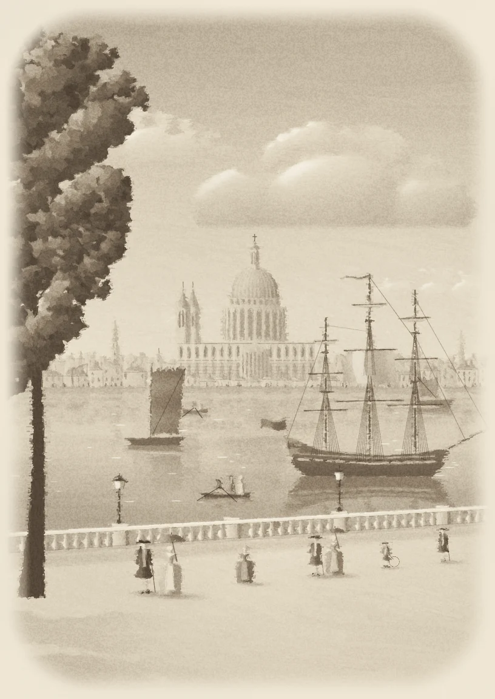
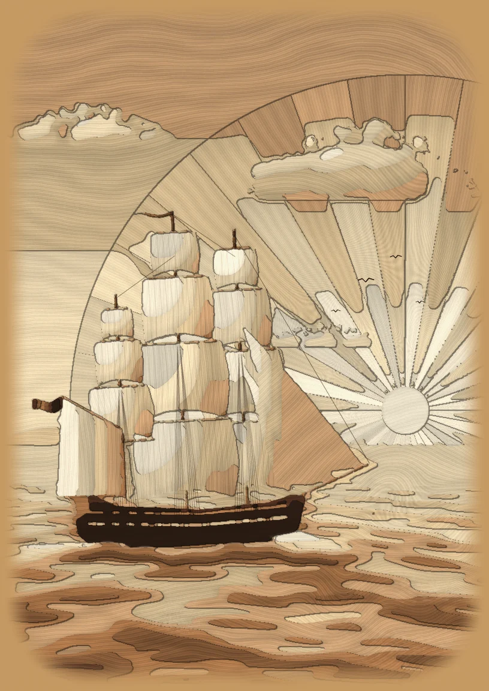
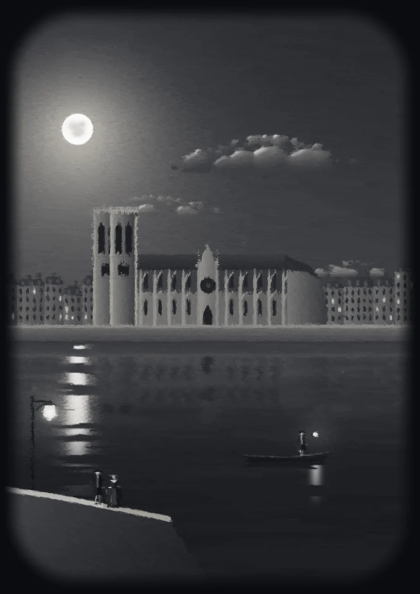
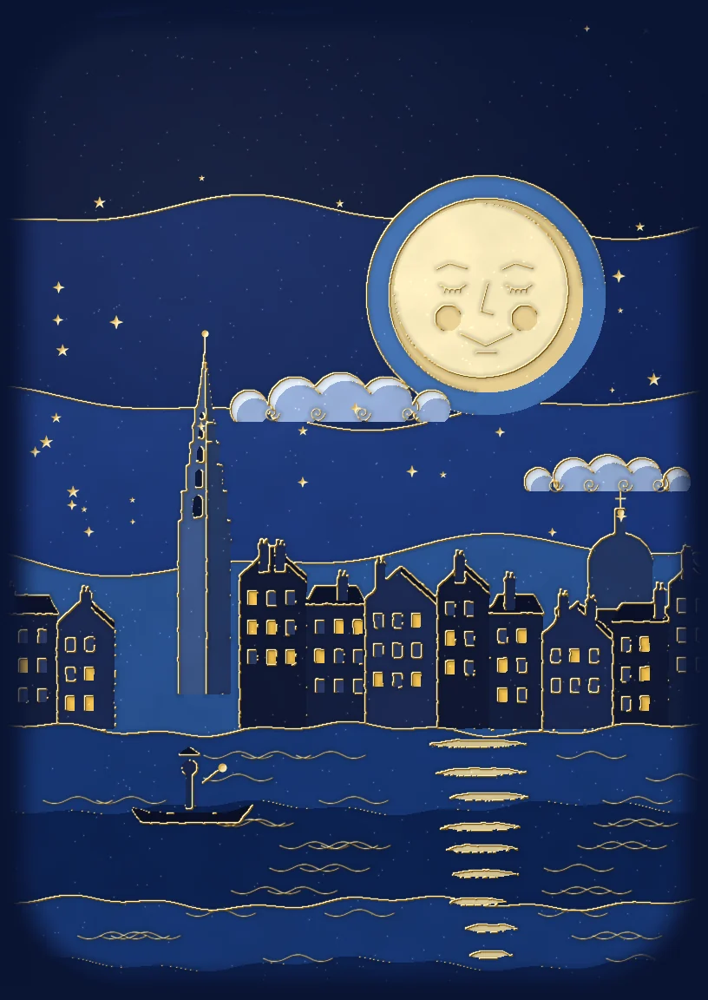
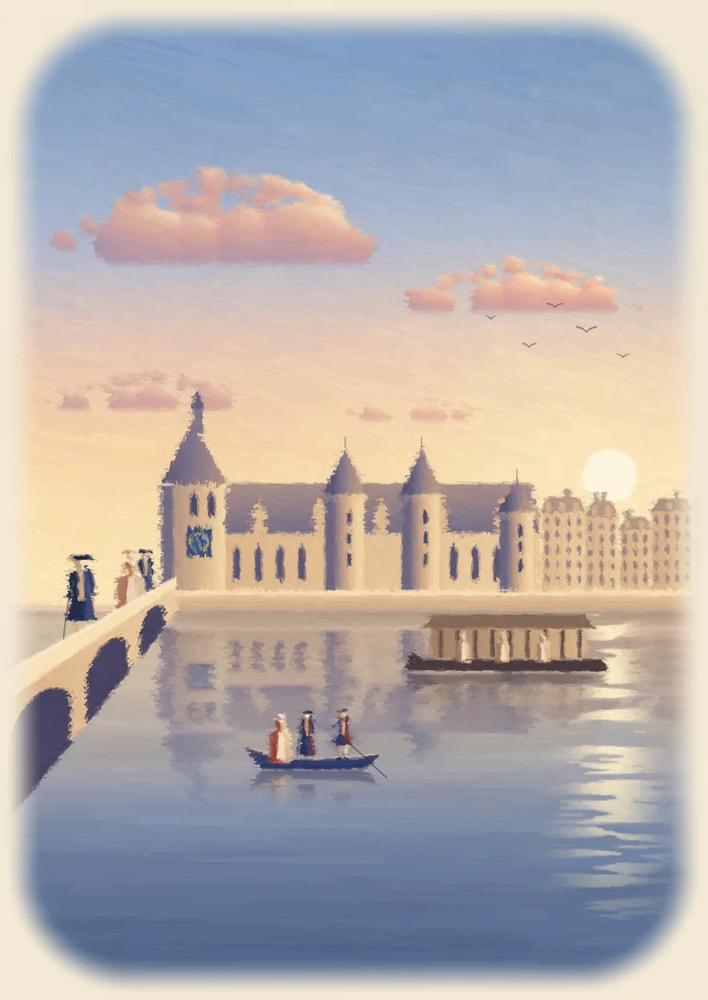

WRISTMASTERS
SÉRIE I · {{c.typeCaps}}
{{c.label}}
{{c.cap}}
{{c.where}}
{{focusValue}}
{{focusLabel}}
N° {{serial}} · 0512
{{c.name}}
{{c.who}}, {{c.year}}
{{c.label}}
Cadran : {{c.where}} · Texte : Wikipédia, CC BY-SA